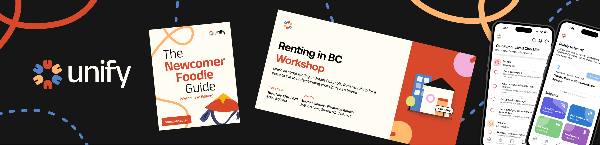
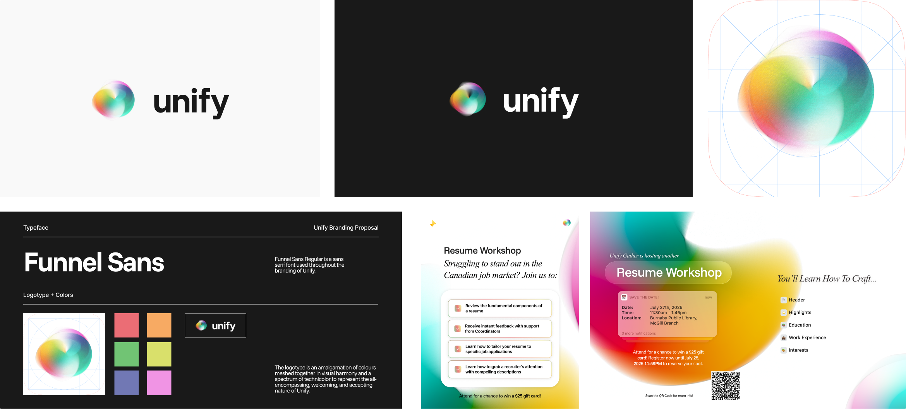
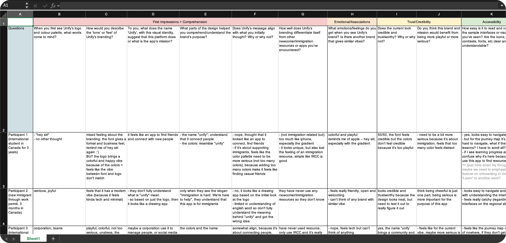
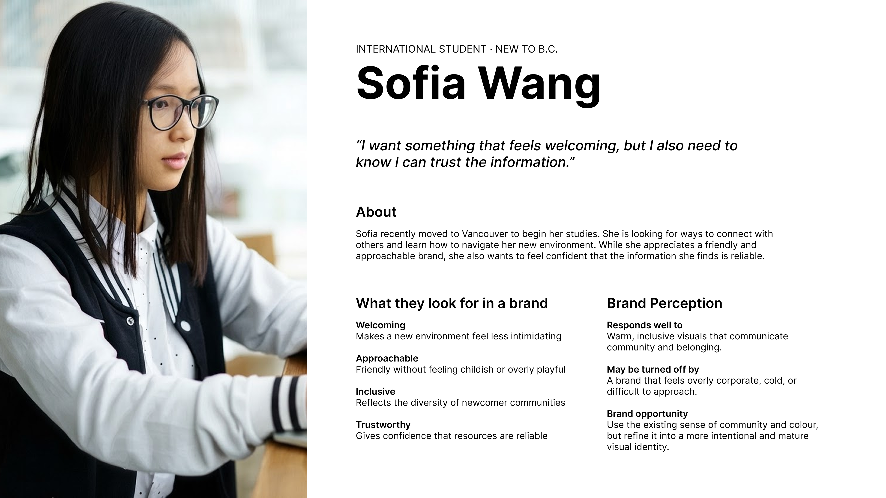
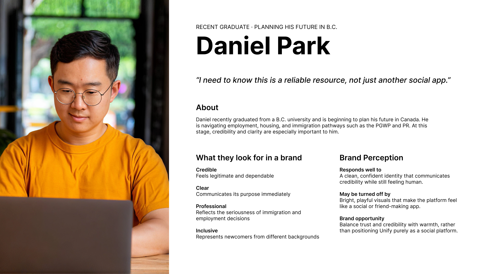
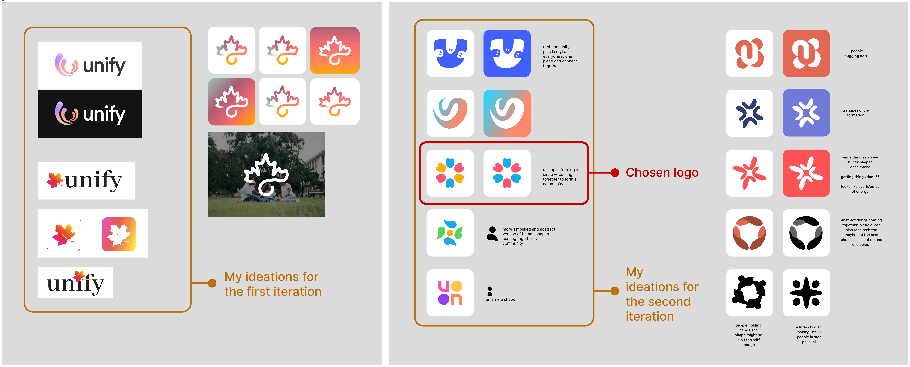

Unify Rebranding
Visual Design, Brand Strategy, User Research
Rebranding Unify’s visual identity with a more welcoming and inclusive logo and colour palette, designed to work consistently across the Unify app and marketing materials.

×

My Role
- Co-Design Lead
Team
- Meghna Rajamohan
Tools
- Adobe After Effects
- Adobe Illustrator
- Figma
Duration
- July - Nov, 2025
Overview
Unify is an organization that helps newcomers navigate life in B.C, Canada by centralizing resources for healthcare, employment, and social connection. It was developed through Enactus SFU, a student-led organization focused on social impact through entrepreneurship.
Unify’s previous branding didn’t fully reflect its mission of community and support. To address this, the Co-Project Managers initiated a rebrand. As a Design Lead, I led the rebrand research and developed a new design system that works across digital marketing, print materials, and the Unify app. I was also in charge of creating animation reels and promotional graphics for the rebrand campaign.
This project won:
★ RBC Foundation Best Project Award, Skills for a Thriving Future Project Accelerator 2026
★ 1st Place in Enactus 2026 National Community Empowerment Challenge
PHASE 1: Design Evaluation
Clarifying Brand Strategy
During our initial stakeholder kick-off with the Unify Project Managers, we conducted a short interview to better understand their goals for the rebrand. They wanted Unify to feel more welcoming, approachable, and inclusive for newcomers, while still reflecting the purpose and values of the organization.
They felt that the previous branding leaned more toward the look and feel of a tech company, which didn’t fully reflect the welcoming and community-focused experience they wanted Unify to provide.

unify's old branding
Evaluating Current Unify Branding
The other designer and I conducted separate design evaluations to gather different perspectives on the existing branding. We then came together to discuss and compare our findings.
The existing identity relies on a complex gradient which limits its flexibility across different backgrounds and applications. The details become difficult to recognize at smaller sizes, making the logo less clear and memorable. A simpler, more adaptable identity would improve consistency and recognition across different formats.
PHASE 2: Exploratory Research
Users Discovery
As the unify app wasn’t launched at that time, we then conducted interviews with 12 unify event participants and 15 potential users who fit in unify’s target users. We run the interview by showing them existed marketing materials and unify app’s mockup for the interfaces.

Excel spreadsheet of the interviews
Turning Insights into Key User Pain Points
We then grouped participants’ responses to identify the key issues with the current branding, as well as what was already working well. Some of the main insights were:
- The visual style feels too similar to Apple.
Participants felt that the current logo and colour palette resembled Siri, while the UI components reminded them of Apple’s design system. - The playful colour palette affects the perceived purpose.
The bright and colourful visuals made the app feel more like a social or friend-making platform, rather than a serious resource for immigration. - The use of multiple colours effectively communicates community.
Despite the concerns about the colour palette, the variety of colours helped convey a sense of community and togetherness.
Defining Who We’re Designing For
Our research shows that immigrants at different stages of their journey have different expectations of what a newcomer support platform should feel like. We developed two personas to represent these audiences and used them to guide the rebrand toward an identity that feels welcoming and community-driven, while still trustworthy and credible.


PHASE 3: Ideation, Sketching and Iterations
Exploring Logo Variations
Inspired by a moodboard of multi-colour logos, we explored a flat logo with defined shapes to make the identity more versatile across sizes, backgrounds, and platforms. Our first iteration used gradients, but feedback from the Co-PMs encouraged us to move away from them to create a less tech-focused feel. This helped me realize that connection could be expressed through shape, composition, and colour, not just gradients, leading to a more flexible direction for the final iteration while maintaining a sense of community.

Final Outcome
After an internal meeting with all members of unify, a logo I made in the second iteration was selected, however, the team feels that the colours were too vibrant and colourful, which leaded us to do our final revision on the colour palette and came up with a warmer tone for community feel as our final version.

Impact
This new visual system together with the rebranding campaign animation I created helped Unify strengthen its community-focused identity and create a more welcoming, cohesive brand experience, with measurable results:
- Brand awareness increased by 30% among target audiences
- Social media visual content interaction rate grew by 35%
- Participation in engaging offline unify social events rose sharply by 28%